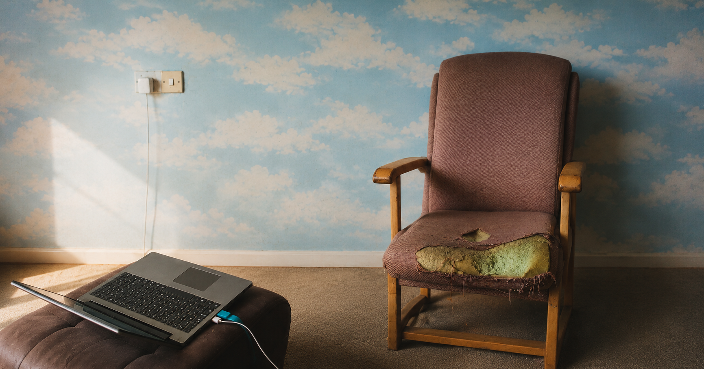

This Old Chair
Cover

This Old Chair
From a worn chair that became prison, refuge and witness, Liam Moloney recounts twenty-one years of pain, a life-altering medical reversal, and the unexpected emergence of a new mathematical philosophy from solitude, grief and relentless inquiry.
Loading the book…